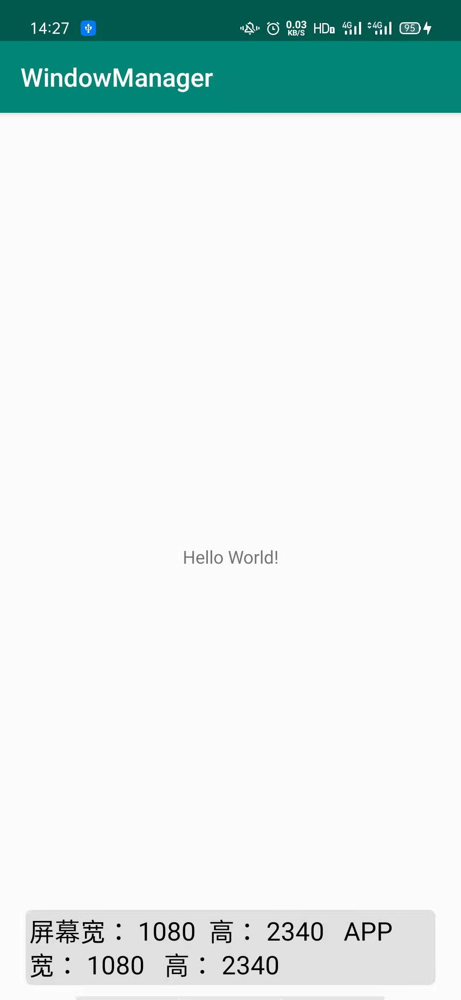
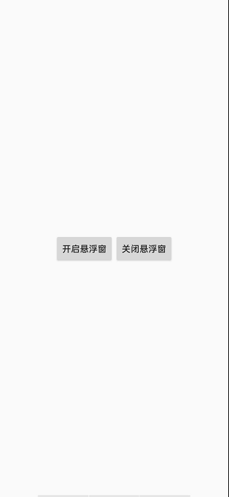

一.源码传送门：
WindowManager
Screen
此文是在此基础上做的讲解,用于加深印象
二.WindowManager介绍
Android为我们提供的用于与窗口管理器进行交互的一个API！我们都知道App的界面都是 由一个个的Acitivty组成，而Activity又由View组成，当我们想显示一个界面的时候， 第一时间想起的是:Activity，对吧？又或者是Dialog和Toast。
但是有些情况下，前面这三者可能满足不了我们的需求，比如我们仅仅是一个简单的显示 用Activity显得有点多余了，而Dialog又需要Context对象，Toast又不可以点击… 对于以上的情况我们可以利用WindowManager这个东东添加View到屏幕上， 或者从屏幕上移除View！他就是管理Android窗口机制的一个接口，显示View的最底层！
三.如何获得WindowManager实例
- 获得WindowManager对象:
1
WindowManager wManager = getApplicationContext().getSystemService(Context. WINDOW_ SERVICE);
- 获得WindowManager.LayoutParams对象，为后续操作做准备
1
WindowManager.LayoutParams wmParams=new WindowManager.LayoutParams();
四.WindowManager使用实例：
实例1：获取屏幕宽高
1
2
3
4
5
6
7
8
9
10
11
12
13
14
15
16
17
18
19
20
21
22
23
24
25
26
27
28
29
30
31
32
33/**
* Return the width of screen, in pixel.
*
* @return the width of screen, in pixel
*/
public static int getScreenWidth() {
WindowManager wm = (WindowManager) getApp().getSystemService(Context.WINDOW_SERVICE);
if (wm == null) return -1;
Point point = new Point();
if (Build.VERSION.SDK_INT >= Build.VERSION_CODES.JELLY_BEAN_MR1) {
wm.getDefaultDisplay().getRealSize(point);
} else {
wm.getDefaultDisplay().getSize(point);
}
return point.x;
}
/**
* Return the height of screen, in pixel.
*
* @return the height of screen, in pixel
*/
public static int getScreenHeight() {
WindowManager wm = (WindowManager) getApp().getSystemService(Context.WINDOW_SERVICE);
if (wm == null) return -1;
Point point = new Point();
if (Build.VERSION.SDK_INT >= Build.VERSION_CODES.JELLY_BEAN_MR1) {
wm.getDefaultDisplay().getRealSize(point);
} else {
wm.getDefaultDisplay().getSize(point);
}
return point.y;
}获取应用宽高
1
2
3
4
5
6
7
8
9
10
11
12
13
14
15
16
17
18
19
20
21
22
23
24
25/**
* Return the application's width of screen, in pixel.
*
* @return the application's width of screen, in pixel
*/
public static int getAppScreenWidth() {
WindowManager wm = (WindowManager) getApp().getSystemService(Context.WINDOW_SERVICE);
if (wm == null) return -1;
Point point = new Point();
wm.getDefaultDisplay().getSize(point);
return point.x;
}
/**
* Return the application's height of screen, in pixel.
*
* @return the application's height of screen, in pixel
*/
public static int getAppScreenHeight() {
WindowManager wm = (WindowManager) getApp().getSystemService(Context.WINDOW_SERVICE);
if (wm == null) return -1;
Point point = new Point();
wm.getDefaultDisplay().getSize(point);
return point.y;
}
实例2：设置窗口全屏显示
1
2
3getWindow().setFlags(WindowManager.LayoutParams.FLAG_FULLSCREEN,
WindowManager.LayoutParams.FLAG_FULLSCREEN);
getSupportActionBar().hide();运行结果：
实例3：保持屏幕常亮
1
2
3
4
5
6
7
8
9
10
11/**
* @param activity
* @param keepScreenOn 是否开启屏幕常亮
*/
public void setKeepScreenOn(Activity activity, boolean keepScreenOn) {
if(keepScreenOn){
activity.getWindow().addFlags(WindowManager.LayoutParams.FLAG_KEEP_SCREEN_ON);
}else{
activity.getWindow().clearFlags(WindowManager.LayoutParams.FLAG_KEEP_SCREEN_ON);
}
}实例4：简单悬浮框的实现
实现代码：
一个触摸图标工具类：EasyTouchView.class1
2
3
4
5
6
7
8
9
10
11
12
13
14
15
16
17
18
19
20
21
22
23
24
25
26
27
28
29
30
31
32
33
34
35
36
37
38
39
40
41
42
43
44
45
46
47
48
49
50
51
52
53
54
55
56
57
58
59
60
61
62
63
64
65
66
67
68
69
70
71
72
73
74
75
76
77
78
79
80
81
82
83
84
85
86
87
88
89
90
91
92
93
94
95
96
97
98
99
100
101
102
103
104
105
106
107
108
109
110
111
112
113
114
115
116
117
118
119
120
121
122
123
124
125
126
127
128
129
130
131
132
133
134
135
136
137
138
139
140
141
142
143
144
145
146
147
148
149
150
151
152
153
154
155
156
157
158
159
160
161
162
163
164
165
166
167
168
169
170
171
172
173
174
175
176
177
178
179
180
181
182
183
184
185
186
187
188
189
190
191
192package cn.xy.windowmanager;
import android.annotation.SuppressLint;
import android.content.Context;
import android.graphics.PixelFormat;
import android.os.Build;
import android.util.DisplayMetrics;
import android.util.Log;
import android.view.Gravity;
import android.view.MotionEvent;
import android.view.View;
import android.view.WindowManager;
import android.widget.Button;
public class EasyTouchView{
public static final String TAG = "EasyTouch";
private static EasyTouchView mEasyTouchView;
private Context mContext;
public static EasyTouchView getInstance() {
if (mEasyTouchView == null) {
mEasyTouchView = new EasyTouchView();
}
return mEasyTouchView;
}
private WindowManager mWindowManager;
private int width, height;
private double stateHeight;
private WindowManager.LayoutParams layoutParams;
private Button iconView;
private float startX = 0, startY = 0;
private float startRawX = 0, startRawY = 0;
private int iconViewX = 0, iconViewY = 0;
private boolean isIconView = false;
private DisplayMetrics mDisplayMetrics;
public void initEasyTouch(Context mContext, DisplayMetrics displayMetrics) {
this.mDisplayMetrics = displayMetrics;
this.mContext = mContext;
width = mDisplayMetrics.widthPixels;
height = mDisplayMetrics.heightPixels;
stateHeight = Math.ceil(25 * displayMetrics.density);
createWM();
}
private void createWM() {
mWindowManager = (WindowManager) mContext.getSystemService(Context.WINDOW_SERVICE);
layoutParams = new WindowManager.LayoutParams();
if (Build.VERSION.SDK_INT >= Build.VERSION_CODES.M){
layoutParams.type = WindowManager.LayoutParams.TYPE_APPLICATION_OVERLAY;
}else {
layoutParams.type = WindowManager.LayoutParams.TYPE_SYSTEM_ALERT;
}
layoutParams.format = PixelFormat.TRANSLUCENT;
layoutParams.flags = WindowManager.LayoutParams.FLAG_IGNORE_CHEEK_PRESSES | WindowManager.LayoutParams.FLAG_NOT_FOCUSABLE;
}
@SuppressLint("ClickableViewAccessibility")
public void addIconView() {
if (isIconView) {
return;
}
isIconView = true;
if (iconView == null) {
iconView = new Button(mContext);
iconView.setBackgroundResource(R.mipmap.ic_launcher);
iconView.setOnTouchListener(new View.OnTouchListener() {
@Override
public boolean onTouch(View v, MotionEvent event) {
float rawX = event.getRawX();
float rawY = (float) (event.getRawY() - stateHeight);
int sumX = (int) (rawX - startRawX);
int sumY = (int) (event.getRawY() - startRawY);
switch (event.getAction()) {
case MotionEvent.ACTION_DOWN:
Log.i("Log", "Action_Down");
startX = event.getX();
startY = event.getY();
startRawX = event.getRawX();
startRawY = event.getRawY();
layoutParams.alpha = 1f;
mWindowManager.updateViewLayout(iconView, layoutParams);
break;
case MotionEvent.ACTION_UP:
/* layoutParams.alpha = 0.6f;
mWindowManager.updateViewLayout(iconView, layoutParams);
if (sumX > -10 && sumX < 10 && sumY > -10 && sumY < 10) {
removeIcon();
} else {
float endRawX = rawX - startX;
float endRawY = rawY - startY;
if (endRawX < width / 2) {
if (endRawX > endRawY) {
if (rawY > iconView.getHeight() * 2) {
updateIconViewPosition(endRawX, endRawY);
} else {
updateIconViewPosition(endRawX, 0);
}
} else if (endRawX > height - event.getRawY() - 98) {
if ((float) (height - stateHeight - endRawY - 98) > iconView.getHeight() * 2) {
updateIconViewPosition(endRawX, endRawY);
} else {
updateIconViewPosition(endRawX, (float) (height - stateHeight - 98));
}
} else {
if (endRawX > iconView.getWidth() * 2) {
updateIconViewPosition(endRawX, endRawY);
} else {
updateIconViewPosition(0, endRawY);
}
}
} else {
if (width - endRawX - 98 > endRawY) {
if (rawY > iconView.getHeight() * 2) {
updateIconViewPosition(endRawX, endRawY);
} else {
updateIconViewPosition(endRawX, 0);
}
} else if (width - endRawX - 98 > height - event.getRawY() - 98) {
if ((float) (height - stateHeight - endRawY - 98) > iconView.getHeight() * 2) {
updateIconViewPosition(endRawX, endRawY);
} else {
updateIconViewPosition(endRawX, (float) (height - stateHeight - 98));
}
} else {
if (width - endRawX - 98 > iconView.getWidth() * 2) {
updateIconViewPosition(endRawX, endRawY);
} else {
updateIconViewPosition(width, endRawY);
}
}
}
}
startX = 0;
startY = 0;
startRawX = 0;
startRawY = 0;*/
break;
case MotionEvent.ACTION_MOVE:
if (sumX < -10 || sumX > 10 || sumY < -10 || sumY > 10) {
updateIconViewPosition(rawX - startX, rawY - startY);
}
break;
default:
break;
}
return true;
}
});
}
layoutParams.alpha = 0.5f;
layoutParams.x = iconViewX;
layoutParams.y = iconViewY;
layoutParams.width = 170;
layoutParams.height = 170;
layoutParams.gravity = Gravity.LEFT | Gravity.TOP;
mWindowManager.addView(iconView, layoutParams);
}
private void updateIconViewPosition(float x, float y) {
iconViewX = (int) x;
iconViewY = (int) y;
layoutParams.x = (int) x;
layoutParams.y = (int) y;
mWindowManager.updateViewLayout(iconView, layoutParams);
}
public void removeIcon() {
if (isIconView && iconView != null) {
mWindowManager.removeView(iconView);
isIconView = false;
}
}
}开关控制
1
2
3
4
5
6
7
8
9
10public void onClick(View view){
switch (view.getId()){
case R.id.open:
EasyTouchView.getInstance().addIconView();
break;
case R.id.close:
EasyTouchView.getInstance().removeIcon();
break;
}
}接着AndroidManifest.xml加上权限，以及为MainService进行注册：
1
<uses-permission android:name="android.permission.SYSTEM_ALERT_WINDOW"/>
运行效果图：


...
...
00:00
00:00
听首歌放松一下！